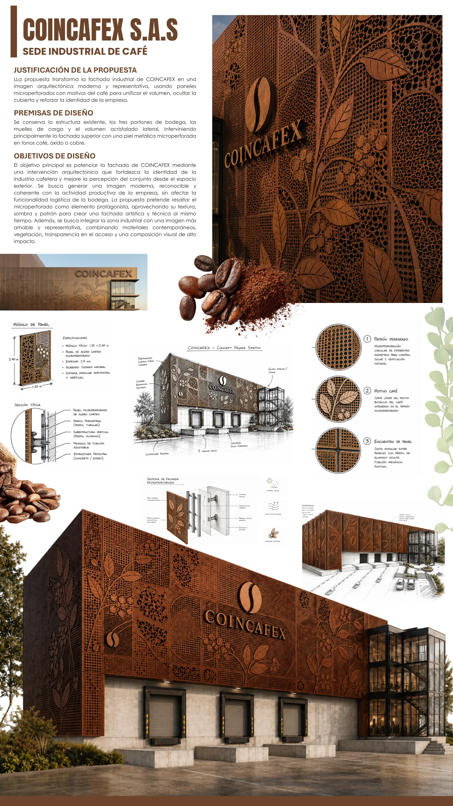

Visualización arquitectónica 3D para vivienda, comercio y espacios corporativos. Bucaramanga, Colombia.
Vivienda unifamiliar, espacios corporativos y comercio. Cada proyecto parte del modelo BIM y termina en imágenes listas para vender el diseño.
Animaciones que atraviesan el proyecto completo. Sin audio, pensadas para verse en el teléfono durante una reunión.
Cocinas, closets y comercio. Piezas a medida representadas con el material y la herrajería reales, para aprobar en obra sin sorpresas.
Detrás de cada imagen hay un modelo que se sostiene: geometría real, planos coordinados y criterio de ingeniería civil.
El proyecto se levanta en Revit con elementos reales, no volúmenes decorativos. De ahí salen cortes, plantas y cantidades coherentes entre sí.
Planos arquitectónicos que acompañan la entrega, alineados con el modelo que produjo los renders.
Formación en ingeniería civil (UPB Bucaramanga). Las luces, los espesores y los apoyos que se dibujan son construibles.

Justificación, premisas de diseño y detalle constructivo del panel modular.
Herramientas construidas para resolver problemas concretos de obra y de gestión. Todas en uso real, no prototipos.
Gestión de obra con asistencia de IA. Diseñada para funcionar con señal pobre en campo: cada byte cuenta.
Calculadora de cantidades de obra por capítulos. Sin dependencias, abre en cualquier navegador.
Suite financiera empresarial: control de proyectos, costos y flujo de caja en un solo tablero.
Seguimiento de portafolio de inversiones con histórico y rendimiento por posición.
Propuesta de identidad y producto para una aplicación de eventos: pantallas, marca y flujo de acceso.
Automatización que recibe reportes por WhatsApp, los estructura con IA y los archiva en Drive.
Envíe los planos o un boceto y le indico alcance, tiempo y valor. Respuesta el mismo día.